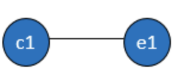
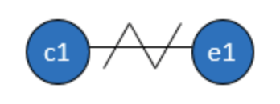
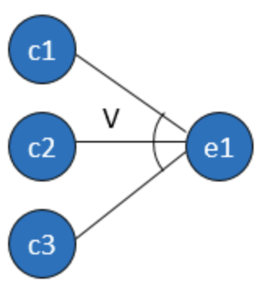
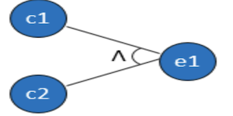
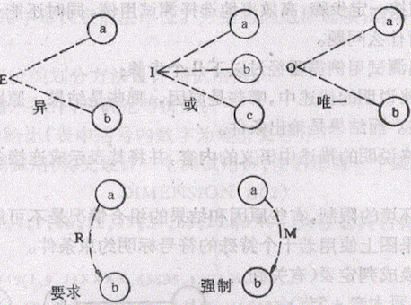

因果图法
1. 概述
因果图法是一种利用图解法分析输入条件、输出结果的各种组合情况,从而设计测试用例的方法.
因果图法适用于有多个输入和多个输出，而且输入和输入之间有相互的组合关系，输入和输出之间有相互的制约和依赖关系.
使用场景和判定表法是一样的.
在界面中有多个控件，控件之间有组合或限制关系，不同的输入组合会对应不同的输出结果，如果想弄清楚不同的输入组合到底对应哪些输出结果，可以使用因果图/判定表法。(因果图/判定表法比较适合测试组合数量较少的情况，一般少于20种)
和判定表法的不同:
- 因果图，只是一个用图形表示，表示因果方式不同而已
关联:
- 判定表和因果图是等价的，判定表是因果图的简化版。
2.核心
2.1 因果图
原因(因): 输入条件
结果(果): 输出结果
因果图: 就是通过画图的方式来表示输入条件（因）和输出结果（果）之间的关系。
2.2 因果图中的图形符号
(1). 恒等(=)

含义: 原因出现结果出现,原型不出现,结果不出现. 例如:若c=10,则d=0.
(2). 非 (~)

含义: 若原因出现,则结果不出现;原因不出现则结果出现.例如: 搜索联系人,若有就不提示错误.
(3). 或 (v)

含义: 若几个原因中有一个出现,这结果出现;若都不出现,结果不出现.
(4). 与(^)

含义: 若几个原因都出现结果才出现,否则,结果不出现.
2.3 约束
输入状态相互之间还可能存在某些互相依赖的关系,称为约束. 输出状态之间也存在某些约束.在因果图中使用特定符号表示这些约.
束.

(1). 输入条件约束
- E(exclude) 约束: a和b中至多有一个为1.
- I(include) 包含: a、b和c中至少有一个必须是1.
- R(required) 要求: a是1时，b必须是1.
- O(only) 唯一: a和b必须有一个，且仅有1个为1.
(2). 输出条件约束
- M(mandatory) 强制: 若结果a是1,结果b强制为0.
3. 设计测试用例
步骤
- 了解需求,找出所有的输入条件(因)
- 找出所有的输出结果(果)
- 画因果图、填判定表
- 判定表中每个规则就是一条测试用例
4.案例
问题描述: 如想对文件进行修改,输入的第一列字符必须是a或b,第二列字符必须是一个数字,如果第一列字符不正确则给出信息L,如果第二个字符不正确,则给出字符M
4.1 了解需求,找出输入条件
1— — 第一列字符是a
2 — — 第一列值符为b、
3 — — 第二列必须是数字
4.2 找出所有的输出结果
结果:
4— 信给出息l
5— 信息m
6— 修改文件
4.3 画因果图、填判定表
通过分析得出,原因1和原因2不可能同时出现,添加约束E. 设置9为中间点.
因果图如下:

判定表法
| 条件(原因) | 1 | 2 | 3 | 4 | 5 | 6 | 7 | 8 | |
|---|---|---|---|---|---|---|---|---|---|
| 1 | Y | Y | N | N | N | N | Y | Y | |
| 2 | N | N | Y | Y | N | N | Y | Y | |
| 3 | Y | N | Y | N | Y | N | Y | N | |
| 中间值 | 9 | Y | Y | Y | Y | N | N | ||
| 动作(结果) | 4 | Y | Y | ||||||
| 5 | Y | Y | |||||||
| 6 | Y | Y | Y |
注意: 第7列和第8列不可能出现,所以排除这两种情况.
4.4 根据判定表设计测试用例

5.小结
因果图法是通向判定表法的一个中间过程.我们经常会将因果图法和判定表分析法结合起来使用.
对于业务逻辑比较复杂的我们建议先使用因果图法进行分析,然后再转化为判定表法,最后写测试用例.这样思路比较清晰,
对于简单的可以直接使用判定表法直接分析,然后写测试用例.